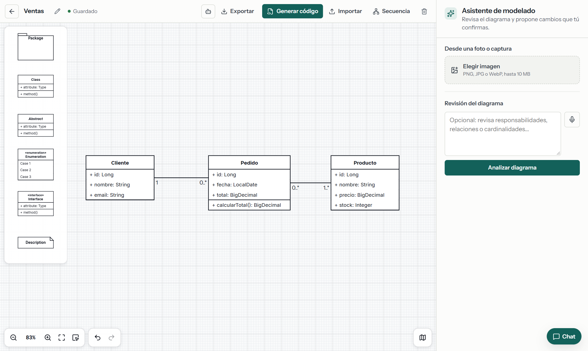
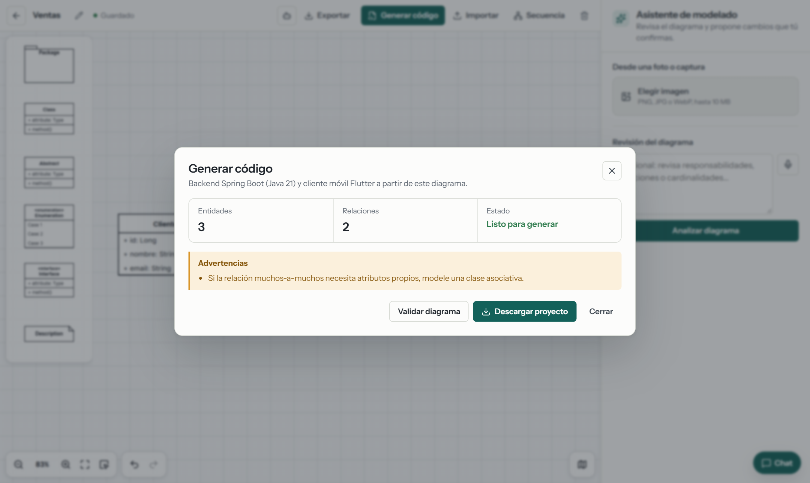
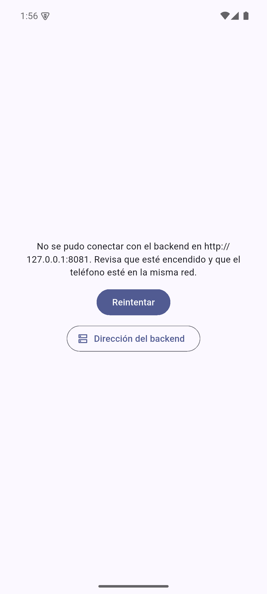
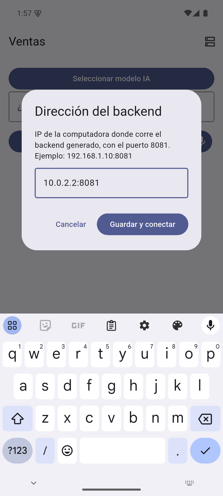
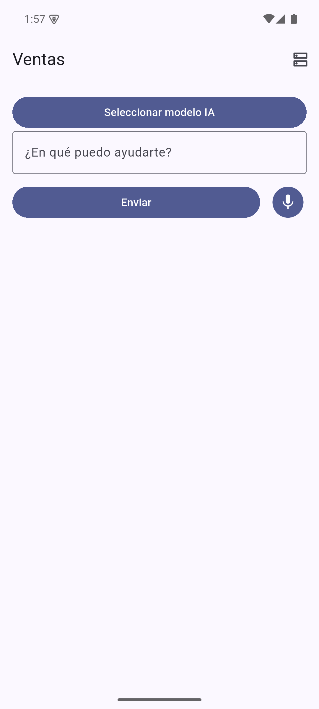
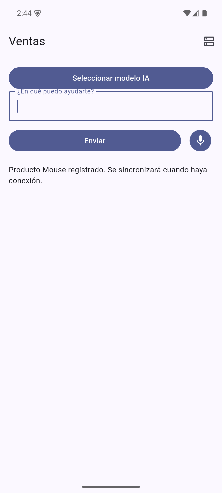

Cómo Collab CASE genera, a partir de un diagrama de clases, un backend completo y un APK listo para instalar que se conecta a ese backend y funciona sin internet.
En el editor se dibujan las clases con sus atributos (+ nombre: Tipo), métodos y relaciones con multiplicidad. Esto es lo único que hay que hacer a mano: todo lo demás sale de aquí.

| Lo que se dibuja | En qué se convierte |
|---|---|
Una clase (Cliente) | Una tabla en la base de datos y un recurso REST /api/cliente |
Un atributo (+ precio: BigDecimal) | Una columna y un campo del JSON |
+ id: Long | Clave primaria autoincremental (si el id es UUID, se genera como UUID) |
| Relación 1 — 0..* | @ManyToOne / @OneToMany con clave foránea |
| Relación 0..* — 1..* | @ManyToMany con tabla intermedia (pedido_producto) |
| Herencia | extends con @Inheritance(JOINED) |
Un método (calcularTotal()) | El esqueleto del método, para completar a mano |
En la barra del editor se toca Generar código. Se abre esta ventana; con Validar diagrama el servidor revisa el modelo antes de generar nada.

Con Descargar proyecto se baja un ZIP con el nombre del diagrama (ventas.zip). Trae tres cosas: el backend, el código de la app móvil y el APK ya compilado.
ventas/ ├── README.md ← pasos para arrancar todo ├── ventas.apk ← APP ANDROID LISTA PARA INSTALAR (cualquier teléfono con Android 9 o superior) ├── backend/ ← proyecto Spring Boot (Java 21, Maven) │ ├── pom.xml │ ├── app-definition.json ← el diagrama en JSON (entidades y relaciones) │ └── src/main/java/com/collabcase/generated/ventas/ │ ├── entity/ Cliente.java Pedido.java Producto.java │ ├── repository/ ClienteRepository.java … │ ├── dto/ ClienteRequest.java ClienteResponse.java … │ ├── service/ ClienteService.java … │ ├── controller/ ClienteController.java … MetaController.java │ ├── mobile/ sincronización con el teléfono (/api/mobile/…) │ └── exception/ manejo de errores 404 / 409 └── mobile/ ← código fuente Flutter de la app (para modificarla)
| Archivo | Para qué |
|---|---|
entity/Cliente.java | Entidad JPA: tabla, columnas, relaciones, syncId y version para sincronizar |
repository/ClienteRepository.java | Acceso a la base (Spring Data JPA) |
dto/ClienteRequest/Response.java | Lo que entra y sale por la API |
service/ClienteService.java | Alta, consulta, modificación y baja; registra cada cambio para el teléfono |
controller/ClienteController.java | Endpoints REST GET/POST/PUT/DELETE /api/cliente |
mobile/ClienteMobileSyncAdapter.java | Aplica los cambios que llegan del teléfono |
entity/Cliente.java)@Entity
@Table(name="cliente")
public class Cliente {
@Id
@GeneratedValue(strategy=GenerationType.IDENTITY)
private Long id;
@Column(nullable=false,unique=true,updatable=false) private UUID syncId;
@Version private Long version;
private String nombre;
private String email;
@OneToMany(mappedBy="cliente")
private List<Pedido> pedidoList = new ArrayList<>();
// getters y setters…
}
controller/ClienteController.java)@RestController @RequestMapping("/api/cliente")
public class ClienteController {
@GetMapping public List<ClienteResponse> all()
@GetMapping("/{id}") public ClienteResponse one(@PathVariable Long id)
@PostMapping @ResponseStatus(CREATED) public ClienteResponse create(@Valid @RequestBody ClienteRequest r)
@PutMapping("/{id}") public ClienteResponse update(@PathVariable Long id, @Valid @RequestBody ClienteRequest r)
@DeleteMapping("/{id}") @ResponseStatus(NO_CONTENT) public void delete(@PathVariable Long id)
}
Pedido ↔ Producto)@ManyToMany
@JoinTable(name="pedido_producto",
joinColumns=@JoinColumn(name="pedido_id"),
inverseJoinColumns=@JoinColumn(name="producto_id"))
private Set<Producto> productoSet = new LinkedHashSet<>();
Además trae una prueba automática (ApplicationTests.java) que arranca el backend y crea un registro de cada entidad: mvn test confirma que todo funciona.
Se necesita Java 21 y Maven. Por defecto usa una base H2 en archivo (no hay que instalar nada más) y escucha en el puerto 8081.
cd ventas/backend mvn spring-boot:run
Con PostgreSQL: definir DB_URL, DB_USERNAME, DB_PASSWORD y arrancar con -Dspring-boot.run.profiles=postgres.
$ curl http://localhost:8081/api/health
{"status":"UP"}
$ curl -X POST http://localhost:8081/api/cliente -d '{"nombre":"Ana Perez","email":"ana@tienda.com"}'
{"id":1,"syncId":"ac41f7f5-…","version":0,"nombre":"Ana Perez","email":"ana@tienda.com"}
$ curl -X POST http://localhost:8081/api/producto -d '{"nombre":"Teclado","precio":120.50,"stock":10}'
{"id":1,"syncId":"bd97856f-…","version":0,"nombre":"Teclado","precio":120.50,"stock":10}
$ curl -X POST http://localhost:8081/api/pedido -d '{"fecha":"2026-11-11","total":120.50,"productoIds":[1]}'
{"id":1,"syncId":"688f6f76-…","version":0,"fecha":"2026-11-11","total":120.50,"productoIds":[1]}
| Ruta | Qué hace |
|---|---|
/api/cliente, /api/pedido, /api/producto | CRUD de cada entidad del diagrama |
/api/health, /api/meta | Estado del servidor y lista de entidades |
/api/mobile/definition | La definición de la app (entidades y campos) para el teléfono |
/api/mobile/changes, /api/mobile/sync | Sincronización: el teléfono baja cambios y sube lo que hizo sin conexión |
ventas.apk al teléfono e instalarlo (Android pide permitir apps de origen desconocido).ipconfig en Windows (por ejemplo 192.168.1.10).IP:8081 y Guardar y conectar.


La app lee del backend qué entidades y campos tiene el sistema, guarda los datos en el teléfono (SQLite) y sincroniza sola. Se le habla en español o por voz (reconocimiento de voz offline, incluido en el APK); opcionalmente se le carga un modelo de IA local (GGUF) desde «Seleccionar modelo IA».

$ curl http://localhost:8081/api/producto
[ {"id":1,"nombre":"Teclado",
"precio":120.50,"stock":10, …},
{"id":2,"nombre":"Mouse",
"precio":null,"stock":null, …} ]
El producto creado en el teléfono llegó al backend por /api/mobile/sync. Lo mismo pasó con un cliente («crea un cliente llamado Luis Gomez»).
Si el teléfono pierde la red, lo que se crea o modifica queda en cola en el teléfono («Se sincronizará cuando haya conexión») y se envía solo al volver. Cada registro tiene un syncId y una version, así no se duplica ni se pisa.
La relación se dibujó en el editor web (Pedido 0..* — 1..* Producto) y se generó desde la web. El backend generado la maneja con @ManyToMany y la tabla intermedia pedido_producto; en la API se manda y se recibe como una lista de ids (productoIds).
$ POST /api/pedido {"fecha":"2026-11-11","total":1140.50,"productoIds":[1,2,3]}
{"id":2,"version":0,"fecha":"2026-11-11","total":1140.50,"productoIds":[1,2,3]}
$ PUT /api/pedido/2 {…,"productoIds":[3]} ← quitar productos
{"id":2,"version":1,…,"productoIds":[3]}
$ PUT /api/pedido/1 {…,"productoIds":[]} ← dejarlo sin productos
{"id":1,"version":1,…,"productoIds":[]}
$ POST /api/pedido {…,"productoIds":[99]} ← producto que no existe
{"message":"Producto not found"} (HTTP 404)
$ DELETE /api/producto/3 ← producto usado en un pedido
{"message":"No se pudo persistir el recurso por una restricción de datos."} (HTTP 409)
El teléfono manda la relación con los syncId de los productos; el backend la guarda y los demás teléfonos la reciben en /api/mobile/changes:
POST /api/mobile/sync {"mutations":[{"entityType":"Pedido","operation":"UPSERT",
"data":{"fecha":"2026-11-11","total":240,"productoSyncIds":["bd97…","1b37…"]}}]}
→ aceptadas: 1, conflictos: 0
→ GET /api/pedido: {"id":3,…,"total":240,"productoIds":[1,2]}
| Caso | Resultado |
|---|---|
| Crear con varios, consultar, modificar, vaciar | Correcto |
| Referencia a un producto que no existe | Rechazado (404) |
| Borrar un producto que está en un pedido | Bloqueado (409), no deja pedidos rotos |
| Relación creada por sincronización móvil | Guardada y distribuida a los demás teléfonos |
Endpoints: GET /api/diagrams/{id}/codegen/backend/validate y POST /api/diagrams/{id}/codegen/backend.
La app no trae las entidades metidas en el código: al conectarse pide /api/mobile/definition y arma todo con eso (nombre de la app, entidades, campos). Por eso el servidor incluye en cada ZIP el mismo APK ya compilado y solo hace falta decirle la dirección del backend. Si se quiere cambiar la app, el código fuente está en mobile/:
cd ventas/mobile flutter pub get flutter build apk --release
| Síntoma | Solución |
|---|---|
| «No se pudo conectar con el backend» | Backend apagado, IP equivocada o el teléfono en otra red. Probar desde el navegador del teléfono http://IP:8081/api/health. |
| Desde el navegador del teléfono tampoco abre | El firewall de Windows bloquea el puerto: permitir Java en redes privadas. |
mvn no existe | Instalar Maven, o abrir backend/ en IntelliJ y ejecutar Application. |
| Error de versión de Java | El backend pide Java 21. |
| El ZIP tarda en bajar | Pesa unos 250 MB porque trae el APK con el reconocimiento de voz offline (~100 MB de modelo). |